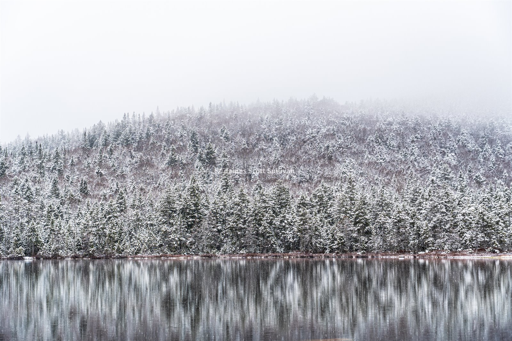
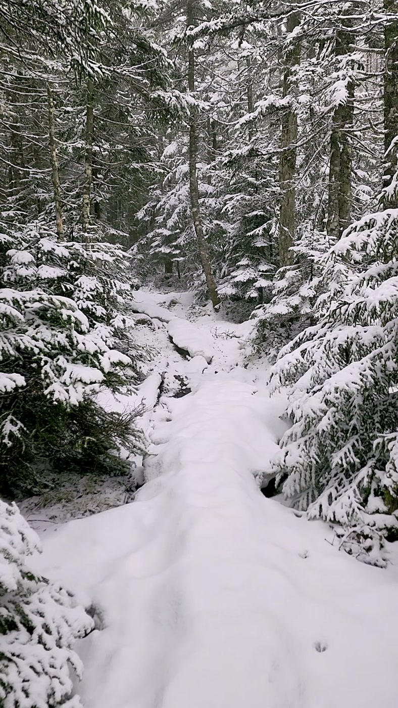
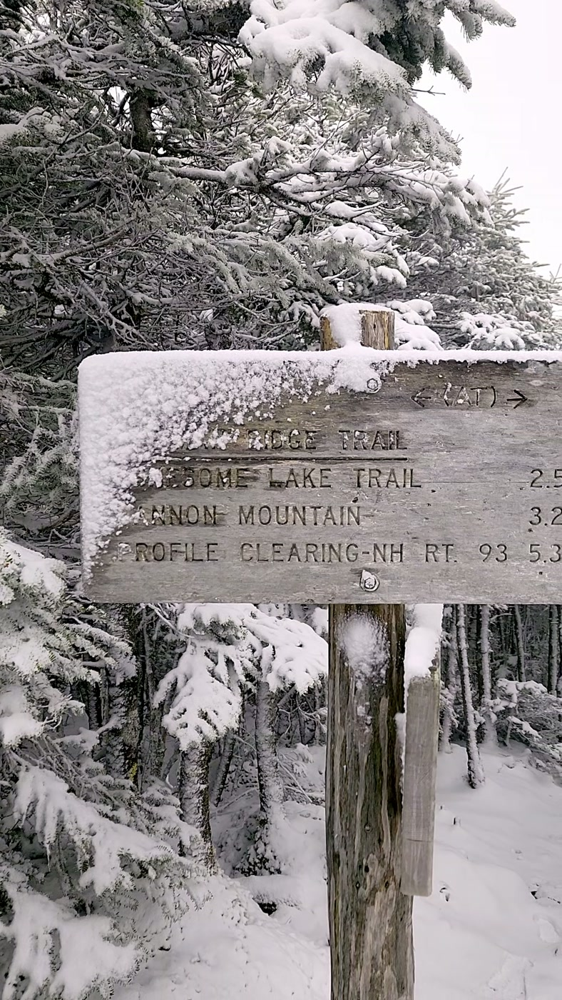
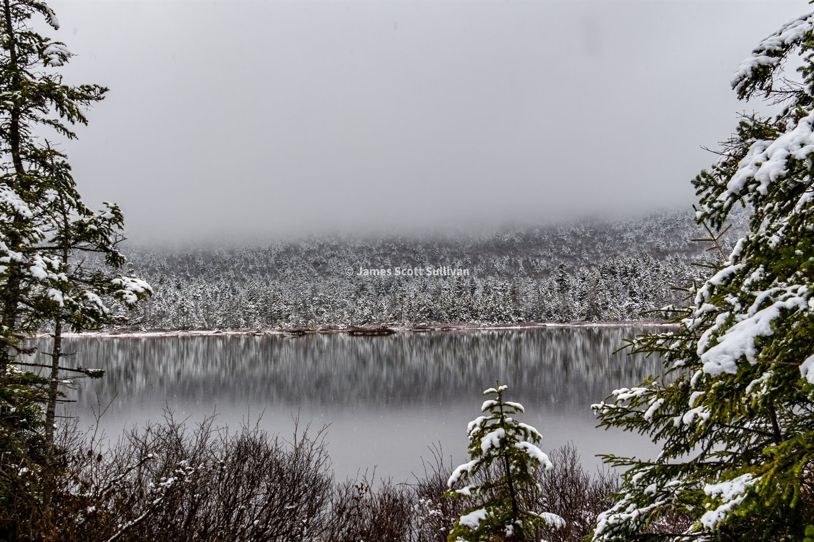

32/48. And I got checked.
I stumbled onto the New Hampshire 48 4000 Footers list back in 2019 or 2020, around the same time I was figuring out mountains had more to offer than just riding a chairlift up and skiing down. The first few hikes were not part of some big master plan. Me and my friends just wanted peaks with views, and a bunch of them happened to be on the list.
The last couple of months have been intense in a good way. A lot of travel, a lot of adventures, a lot of really good people and really good memories. Naturally that kind of high leaves a little hangover. Spring in the Whites has also been rough, and I have not really had the drive to chase ski lines, so I have mostly been biking around Boston trying to keep myself busy. I thought I had an open weather window this weekend. That illusion held until about halfway up to New Hampshire after a 5 a.m. start.
I was originally heading for Mount Isolation. I know that area, I like the Glen Boulder side, and the whole plan felt simple enough. Then I looked at the weather for real. It was basically winter up high: soupy clouds, wintry mix, and one to two inches of fresh snow and rime on a ridgeline that is already a chunky bouldery mess. That sounded less like fun suffering and more like actual hell.
I called my dad because he was supposed to hike a section with me. We talked through the weather, he bailed, and I switched over to North and South Kinsman instead. I had been on Kinsman Ridge earlier in the winter with skis on my back, which was questionable enough on its own, but I knew the terrain would keep me near treeline and out of the really exposed nonsense. Close enough. New plan.

That plan was still pretty loose. Cue some questionable AllTrails x driving decisions. I figured out I could park at Lafayette Campground, head up to Lonesome Lake, take Fishin Jimmy up to North Kinsman, grab South Kinsman too, and come back out. Easy. Nine or ten miles, just under four thousand feet, no big deal. I did not really study the details. I was driving over the Kanc in sketchy weather with limited service and a strong desire to get up high.
Then the usual stupid little stuff kicked in. I geared up, left the lot, got about a quarter mile up, and realized I had forgotten my phone. Turned around, grabbed it, and started over. The trail was wet, there was not much snow at the bottom, and the early climb was easier than I expected, but it was also much more slabby and scrambly than I had bothered to learn ahead of time. There were scraps of monorail here and there, enough snow to hide little surprises, and just enough uncertainty to make me slow down.
That was probably the right call. This was the first real hike of what I am calling my spring and summer season, and I would have been so pissed if I started the whole thing injured because I wanted to move fast for no reason.
By the time I reached Lonesome Lake, it had turned to real winter. I recognized the Fishin Jimmy sign, remembered seeing it on the map in passing, and kept going. I am really not kidding when I say I went out there with very little plan, but that is also part of the fun for me. Being out there prepared for whatever, managing daylight, energy, conditions, and a half-formed mental map as I go. That is all part of the game.
Fishin Jimmy is where the real hike started. The trail up to Lonesome Lake is almost like a filter. If you are already uncomfortable on those early sections, just stop at the lake and enjoy yourself. Everything above that gets steeper, weirder, and way more fun.

It was slab climbing, waterfalls, carved rock steps, wooden steps, monorail, ice, and just enough snow to make every move a question. I did about eighty percent of it without microspikes even though they were strapped to the outside of my bag and absurdly easy to reach. Pure stubbornness. I had done the same sort of thing on Kinsman Ridge in ski boots. Maybe I will learn someday.
Not using spikes led to some very questionable climbing. I was basically jungle-gyming up the slabs, grabbing trees and roots, hanging back in this half-belay, half-rock-climbing posture and inching my way through. It worked, but it also looked sketchy enough that when I ran into an older couple they gave me the kind of look that says, this guy might be the next SAR call. That was finally enough to get the spikes on.

The original goal was simple: get North and South Kinsman and be done with it. But when I hit the ridgeline it was the second time I had been up there and still had no view. You can tell that place is dramatic even when it is socked in. You can feel the void below you, the cliffs under your feet, and you know Lafayette, Lincoln, and Little Haystack are right there somewhere, smacking you in the face behind the clouds.
I started toward South Kinsman and got more annoyed with every slab. On a normal day none of those moves would be a problem. But I was solo, first one heading that way, moving slower because of the conditions, and I really had not researched the trail well enough to know what the next section would ask of me. That, plus the total lack of views, was enough. I made the decision to turn around before South Kinsman.
Honestly, there were good reasons for it. It gives me a clean excuse to come back on a nice day, get the views, and actually enjoy that ridgeline the way I want to. Backpacking in there looks awesome, and I may come back in from Kinsman Notch anyway. More than anything, if it feels like the mountains are telling me to turn around, I do. I have never felt dumb for listening to that.

About halfway down I got frustrated with the decision, which felt about right. But I never beat myself up over turning around in the mountains. I had switched hikes about an hour before starting, had not looked closely enough at the terrain, was climbing wet snowy slabs solo, and still got a really good day out of it. I have been humbled much worse by mountains.
I will be back to Kinsman Ridge, probably a bunch of times. I really like the terrain up there. It feels old, gnarled, and bumpy in a way that makes the hiking more interesting. And it is not relentless the way some other Whites hikes can be.
Overall, a great Saturday.